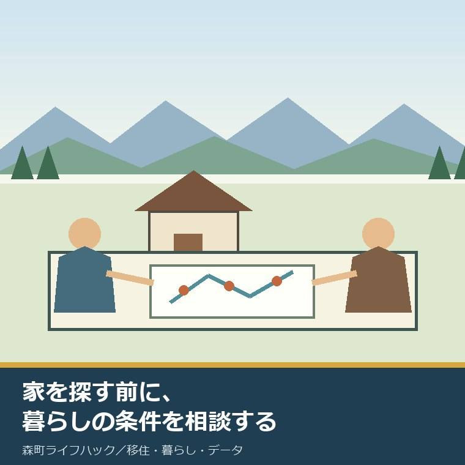
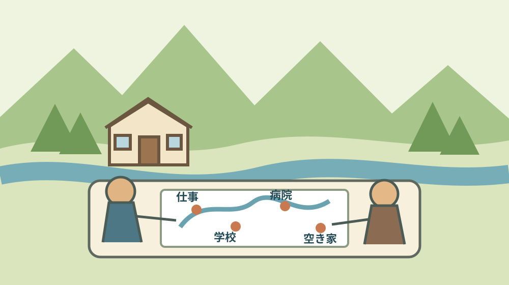
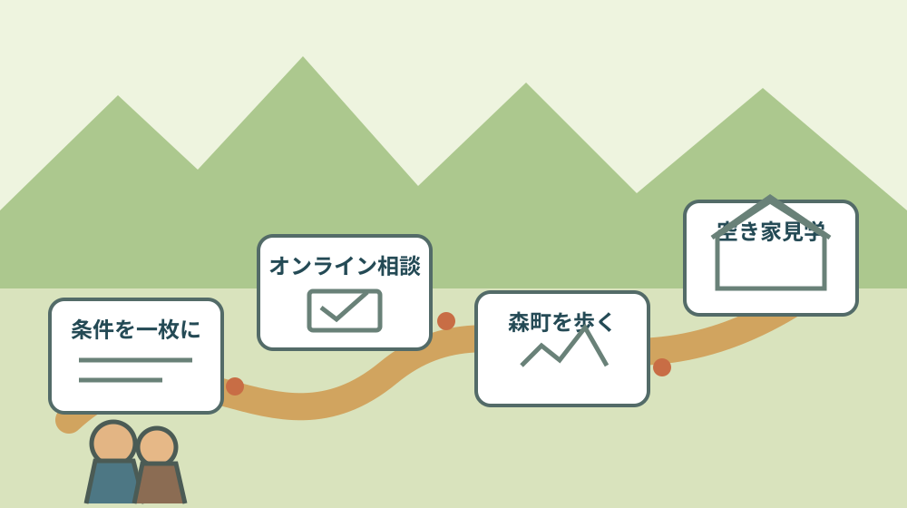

森町の移住コーディネーター｜2026年の役割

この記事の要点
Q. 森町で物件を探す前に、誰へ何を相談できますか。
A. 2026年7月14日更新の森町公式ページには、移住コーディネーターとして横山春人氏が掲載されています。役割は空き家の掘り起こしと利活用、移住・定住の推進、移住交流事業などです。直接の連絡先や相談曜日は未掲載なので、最初は定住推進課移住交流係へ家族の生活条件を伝えます。
森町への移住を考えると、空き家バンクの価格や間取りを先に開きたくなります。
ただ、家が見つかっても、仕事、通学、通院、買い物、地域との付き合いが合わなければ、暮らしは続きません。
物件番号を選ぶ前に、町の事情を知る相談相手が誰なのか。この記事は、その一点を扱います。
森町公式の「森町移住コーディネーターについて」を2026年9月6日に確認しました。ページの更新日は2026年7月14日です。
現在掲載されている担当者、町が示す役割、約90市町という経験の出どころ、一般の相談窓口を分けて整理します。
体験ストックには、私が横山氏へ相談した記録がありません。会った、話した、案内を受けたとは書きません。
私はこう考えます。移住相談の価値は、正解の家を選んでもらうことではなく、家族が自分の条件を言葉にできることにあります。
2026年7月更新で確認できる担当者と役割
2026年9月6日時点の森町公式ページには、移住コーディネーターとして横山春人氏が掲載されています。
町は、地域事情と移住検討者のニーズに精通した人を、移住コーディネーターとして委嘱すると説明しています。
町が示す目的は、移住検討者への柔軟で迅速な情報提供と相談対応、移住者の定住・定着支援、移住促進による地域活性化です。
横山氏の活動内容には、空き家の掘り起こしと利活用による移住・定住の推進、移住交流事業などが挙げられています。
横山氏は2021年7月1日から2024年3月31日まで、町の委嘱を受けて地域おこし協力隊として活動したと記されています。
ここで分かるのは、制度上の役割と活動テーマです。特定の物件を仲介する、契約交渉を代行するとは書かれていません。
移住コーディネーターへの委嘱日、任期、常駐場所、本人へ直接連絡する方法、相談できる曜日も同ページでは未確認です。
担当者名が分かることと、いつでも直接相談できることは別です。最初の連絡先は町の担当窓口として考えます。
約90市町は横山氏本人の説明として読む
約90市町という数字は、横山氏が6年間かけて各地を巡ったという本人の言葉として、森町公式ページに掲載されています。
訪問先の一覧や町による集計表は掲載されていません。町が90市町の活動実績を検証した数字と読み替えないことが必要です。
それでも、移住先を探す側の時間を知っているという経歴は、相談相手を選ぶ材料になります。
意外なのは、横山氏が最初から森町だけを見ていたのではなく、6年間の比較を経て森町にたどり着いたと説明している点です。
外から来る人が迷う順番を知り、町の中の事情も学んできた人なら、両者の言葉をつなぐ役割が期待できます。
ただし、経験が豊富でも、相談者の家計や仕事を代わりに決めることはできません。最後の判断材料は家族が持ちます。
相談前には、横山氏の経歴を知るだけでなく、何を聞きたいかを一枚にしておく方が40分を使いやすくなります。

住まい探しより前に、家族の条件を並べる
森町公式の移住定住手続き案内は、目的確認、同行者の確認、優先順位、情報収集、住まい探しの順に並べています。
町自身が、いきなり家を選ぶのではなく、移住する目的と一緒に暮らす人を先に確かめるよう案内しています。
情報収集の段階では、役場の移住相談窓口や民間不動産業者に話を聞くことも示されています。
森町へ複数回訪れ、四季を確かめるという案内もあります。見学一日の印象だけで生活全体を決めないためです。
家族で最初に書くのは、予算ではなく「誰が、いつから、何のために暮らすか」です。
次に、仕事の場所、通勤方法、子どもの学年、通学・通園、通院先、車の台数、家族の送迎担当を並べます。
その後で、希望地区、賃貸か購入か、改修へ回せる金額、農地の要否、地域行事との距離を考えます。
移住パンフレットTENCOMORIを読む前に条件を三つ決める記事は、この準備に使えます。
条件が全部決まっていなくても構いません。「まだ決めていない」と伝える項目も、相談相手には有用な情報です。
オンライン相談は3営業日前までに予約する
森町のオンライン移住相談は、予約を随時受け付けています。相談時間は9時から17時で、最終受付は16時です。
1回の相談は40分程度です。希望日の3営業日前までに、公式ページの申込フォームから予約します。
相談にはZoomを使います。相談料は無料ですが、通信料は相談者の負担です。
土曜日、日曜日、祝日、年末年始は応相談とされています。予約できると決めつけず、希望日を送って返答を待ちます。
オンライン相談ページには、横山氏本人が必ず担当するとは書かれていません。一般の移住相談窓口として利用します。
40分で伝える順番は、家族構成、移住時期、仕事、学校・通院、住まいの希望、現地で確かめたいことです。
通信が切れた場合に備え、申込内容、町の電話番号、聞きたい質問を紙にも残します。
画面共有で見せる資料へ、勤務先の内部情報や子どもの個人情報を載せすぎないことも確認します。
良い点：相談と空き家の掘り起こしが同じ線にある
良い点の一つ目は、移住相談と空き家の掘り起こしが別々の仕事として切れていないことです。
相談者が求める暮らしと、地域で使われていない家をつなぐには、建物の情報だけでなく持ち主との関係も要ります。
二つ目は、横山氏自身が複数の市町を比較してきたと説明していることです。町外の人が迷う視点を相談に持ち込めます。
三つ目は、オンライン相談があり、物件見学の前に町外から質問できることです。移動時間と交通費を一度減らせます。
四つ目は、町の移住手続き案内が住まい探しを最後に置いていることです。暮らしと家の順序を逆にしません。
森町で空き家を出す持ち主も、草刈り、片付け、修繕、鍵の管理という負担をすでに抱えています。
相談者の希望だけを押しつけず、持ち主側の時間と費用をつなぐ人がいることは、空き家流通の土台になります。
森町の空き家バンク23件を地区と価格で見た記事も、相談後に候補を比べる段階で役立ちます。
注文したい点：連絡経路と相談範囲を一枚で示してほしい
その上で、私は公式案内に注文したい点があります。担当者の紹介と、相談予約の入口が一枚でつながっていません。
移住コーディネーターへ相談したい人が、定住推進課へ電話するのか、オンライン相談を予約するのか、本人へ別の方法で連絡するのかは未掲載です。
相談可能な曜日、対面場所、対応する相談範囲、同行できる場面、返答までの目安も確認できません。
空き家の掘り起こしと利活用には、所有者確認、残置物、境界、道路、農地、改修費、近隣との調整が絡みます。
一人の担当者が全部を処理できるわけではありません。不動産、登記、建築、農地など、どこから専門家へ渡すかの表示が要ります。
町の人も、移住希望者のために空き家を維持し続けられるわけではありません。維持費と担い手が尽きる前の接点が必要です。
正直に言えば、担当者名が分かっても、どう頼ればよいかが分からなければ、制度は知っている人だけのものになります。
物件を選ぶ前に、相談相手を選ぶ。私はそこまでを移住準備の一部だと言い切ります。
森町のお試し移住住宅について公開情報の空白を整理した記事でも、問い合わせる項目を具体化しています。

対案・結論：相談票を一枚だけ作る
森町への移住を考える家族が今日できる小さな一歩は、A4用紙一枚の相談票を作ることです。
上段に、移住を考える理由、同行者、希望時期、現在の居住地を書きます。
中段に、仕事、通学・通園、通院、車、買い物で外せない条件を書きます。
下段に、賃貸か購入か、予算、希望地区、農地の要否、まだ決めていないことを書きます。
最後に、現地で見たい場所を三つまで書きます。数を絞るのは、見学を急がせるためではありません。
相談票があれば、定住推進課移住交流係への電話でも、オンライン相談でも、同じ条件から話を始められます。
町の担当窓口は、森町役場定住推進課移住交流係です。電話番号は0538-85-6321です。
移住するかどうかは相談日に決めなくてよい。条件を一つ言葉にできれば、その日の前進です。
家族に残す記録：相談日と未確認事項を書く
相談記録には、2026年9月6日に見た公式ページの名称と更新日を書きます。
予約した日、相談日時、相談方法、窓口、担当者名、聞いた質問、回答を分けます。
確認できなかった項目も消しません。相談曜日、対面場所、同行の可否、空き家の仲介範囲は未確認欄へ残します。
物件の話が出たら、所在地、価格だけでなく、道路、上下水道、境界、残置物、改修、農地の有無を書きます。
空き家バンクの見学・交渉には利用申込書と同意書の提出が案内され、優先交渉権は先着順です。
先着順だからといって、生活条件を飛ばして申込書を出すのは勧めません。家族の確認欄を先に埋めます。
移住と二地域居住のコーディネーターを混同しない
森町公式の二地域居住の促進ページには、2026年度以降に二地域居住コーディネーターを配置すると記されています。
一方、2026年7月更新ページに横山氏が掲載されている名称は、移住コーディネーターです。
二つが同じ人物、同じ職務、同じ連絡先であるという説明は確認できませんでした。
名称が似ていても、移住、定住、二地域居住では、住民票、仕事、学校、滞在日数、家の持ち方が異なります。
森町特定居住促進計画と二地域居住コーディネーターの記事は、3区域と6拠点、配置年度を別に整理しています。
相談時には「完全移住を検討」「二地域で試したい」「まだ比較中」のどこにいるかを伝えます。
大石の視点：役割の広さより、引き継ぐ線を見る
大石浩之（磐田市／不動産業）として、移住コーディネーターを置く取り組みは良いと考えます。
町外の人は、役場、不動産業者、学校、病院、地域の世話役のどこから聞けばよいか分かりません。
最初の相談相手が見えるだけで、同じ説明を何度も繰り返す負担を減らせます。
一方で、私は横山氏一人が、移住相談と空き家の掘り起こしをどこまで担えるか分かりません。
分からないから、個人の熱意だけを当てにしない。誰が次へ引き継ぐかを見える形にする必要があります。
空き家の相談なら所有者、不動産業者、司法書士、土地家屋調査士、建築業者、町の各窓口へ話が分かれます。
子育て移住なら、保育、学校、放課後、医療、通勤へ話が分かれます。橋渡しには連絡先の台帳が要ります。
原則3の是々非々で見れば、担当者と活動内容の公開は良い点です。注文は、相談入口と専門家へ渡す境目の明示です。
森町の人がすでに払う空き家管理と地域案内の負担を認め、その負担を増やさない相談の順番を作ることが、続く移住支援になります。
まとめ：最初の相談で家を決めない
2026年7月14日更新の森町公式ページには、移住コーディネーターとして横山春人氏が掲載されています。
活動内容は、空き家の掘り起こしと利活用、移住・定住の推進、移住交流事業などです。
約90市町は、6年間かけて各地を巡ったという横山氏本人の説明として読みます。
直接の連絡先や相談曜日は未掲載です。最初は定住推進課移住交流係へ相談します。
今日、移住を決める必要はありません。家族の条件を一枚にし、最初の相談で確かめることを一つ決めます。
よくある質問
Q1. 森町の移住コーディネーターは誰ですか。
A1. 2026年9月6日に確認した森町公式ページでは、横山春人氏が掲載されています。町が示す活動は、空き家の掘り起こしと利活用による移住・定住の推進、移住交流事業などです。委嘱日、任期、直接の連絡先、相談可能曜日は同ページで確認できません。
Q2. 物件を探す前に何を相談すればよいですか。
A2. 家族の同行者、仕事、通学・通園、通院、車の台数、希望地区、譲れない条件を先に整理します。森町公式の移住手続き案内も、目的確認、同行者、優先順位、情報収集を住まい探しより前に置いています。物件番号だけでなく生活条件を相談窓口へ伝えます。
Q3. 森町への移住相談はオンラインでできますか。
A3. 森町のオンライン移住相談は予約を随時受け付け、9時から17時、最終受付16時、1回40分程度です。希望日の3営業日前までに申込フォームで予約し、Zoomを使います。相談料は無料ですが通信料は自己負担で、土日祝日と年末年始は応相談です。
参考にした公式情報
- 森町移住コーディネーターについて／静岡県森町（2026年7月14日更新。担当者、役割、活動歴、本人の説明を2026年9月6日に確認）
- オンライン移住相談／静岡県森町（相談時間、予約期限、方法、費用を2026年9月6日に確認）
- 移住定住手続き／静岡県森町（目的確認から住まい探しまでの順番を2026年9月6日に確認）
- 森町空き家・空き地バンク物件公開ページ／静岡県森町（2026年9月4日更新。利用申込と優先交渉権を2026年9月6日に確認）

磐田市で小さな不動産業を営みながら、森町の空き家・農地・実家じまいの相談を受けています。地域と不動産実務をつなぐ目線で確認の順番を書きます。
最終確認日：2026-09-06 ／ 担当者、役割、相談時間、予約方法、物件情報は変わることがあります。移住コーディネーターへの直接連絡先、相談可能曜日、対面場所、任期、同行範囲は確認できていません。相談前に森町公式ページと定住推進課移住交流係で最新情報を確認してください。